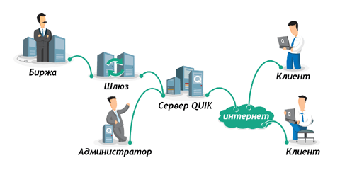

Рабочее место QUIK является основным пользовательским приложением программного комплекса, предоставляющим доступ к торгам и рыночной информации через Интернет в режиме реального времени (интернет-трейдинг). Одна из основных возможностей — отображение биржевой информации в режиме, максимально приближенном к реальному времени. Рабочее место QUIK позволяет наблюдать за текущим состоянием рынка, включая котировки второго уровня (очередь заявок, или так называемый «стакан» котировок), так и историю совершенных сделок. А также получать новости от информационных агентств и обмениваться сообщениями с брокером. Динамика хода торгов наглядно представлена на графиках. Графики в QUIK можно выстраивать по любому рыночному параметру, с использованием инструментов технического анализа и отображением истории торгов. В приложении реализовано свыше 30 индикаторов технического анализа, линии, углы и дуги Фибоначчи, а также рисование трендовых, горизонтальных и вертикальных линий, графических и текстовых меток.
Рабочее место QUIK позволяет видеть состояния собственных средств клиента, формировать заявки на покупку/продажу инструментов и передавать их на сервер брокера. Поддерживается программный ввод заявок средствами встроенных языков программирования и ввод заявок с графика.
Стандартный функционал Рабочего места QUIK позволяет настроить так называемый «скальперский стакан» (вид окна котировок), позволяющий при помощи кнопок на панели осуществлять быстрый ввод заявок, в том числе с помощью технологий drag-and-drop.
Встроенные средства экспорта данных позволяют использовать полученную информацию в других программах — собственных базах данных пользователя и системах тех. анализа. Возможен экспорт данных не только по сделкам, но и по любым параметрам торговой сессии. Вывод данных может осуществляться как «тиками» (т.е. по каждой сделке), так и «свечками» (данными по интервалу времени). Экспорт в MS Excel и базы данных осуществляется через DDE либо ODBC из большинства таблиц программы, включая Окно котировок («стакан»).
Импорт транзакций представляет собой возможность подключения внешних программ для автоматизации формирования и ввода заявок в торговую систему. Импорт осуществляется посредством обмена данными через текстовые файлы или через API.
Центральным звеном системы является сервер QUIK. Сервер подключен
к торговым системам бирж через специальные «шлюзы», передающие серверу
информацию о торгах и средствах брокера на бирже, и принимающие
поручения на покупку/  Администратор системы регистрирует пользователей, устанавливает для них
права на пользование информацией, а также определяет лимиты средств
клиента, в пределах которых он может совершать сделки. Пользователь системы получает биржевую информацию о ходе биржевых торгов, доступных для торговли средствах и может самостоятельно участвовать в торгах, посылая заявки в торговую систему непосредственно с Рабочего места QUIK. Связь рабочего места пользователя с сервером системы осуществляется через сеть Интернет, протокол связи – TCP/IP. Вся информация между сервером и клиентом передается в зашифрованном виде. Во избежание несанкционированного доступа используется пароль.
Основные функции
Получение информации
Графики и индикаторы
Совершение сделок
Экспорт и импорт данных
Как устроен интернет-трейдинг?